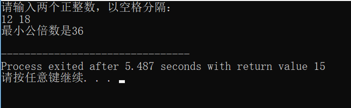

点击“答题”按钮，进入 prog.c 作答，根据程序功能描述，编写程序。
严禁更改 prog.c 中已有代码和注释，仅限在编程区域内编写程序，编程区域外作答无效，可根据需要自行增加或删除编程区域内的行数。
作答完毕，保存 prog.c 文件并关闭 Dev-C++软件，点击“提交本题”按钮。
程序功能：
输入两个正整数，计算并输出这两个数的最小公倍数。最小公倍数是指两个或多个整数共有的倍数中除 0 以外最小的一个。
程序运行结果示例如下图所示。注意：输入输出格式必须与示例一致。
